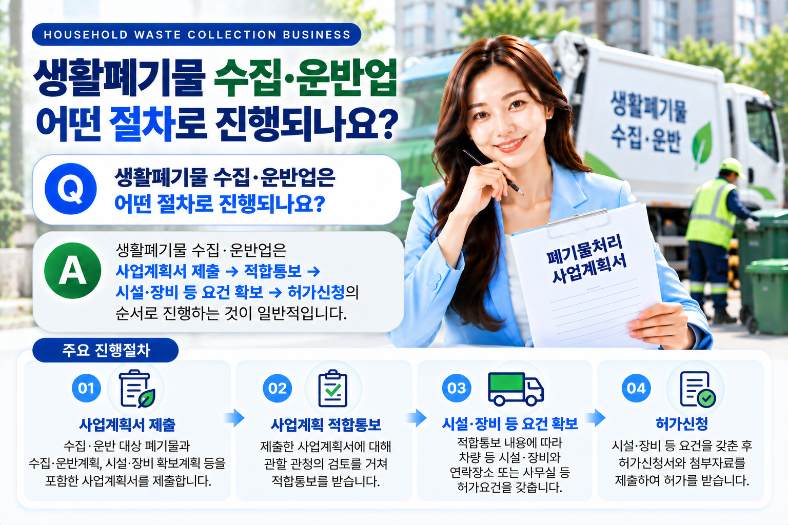
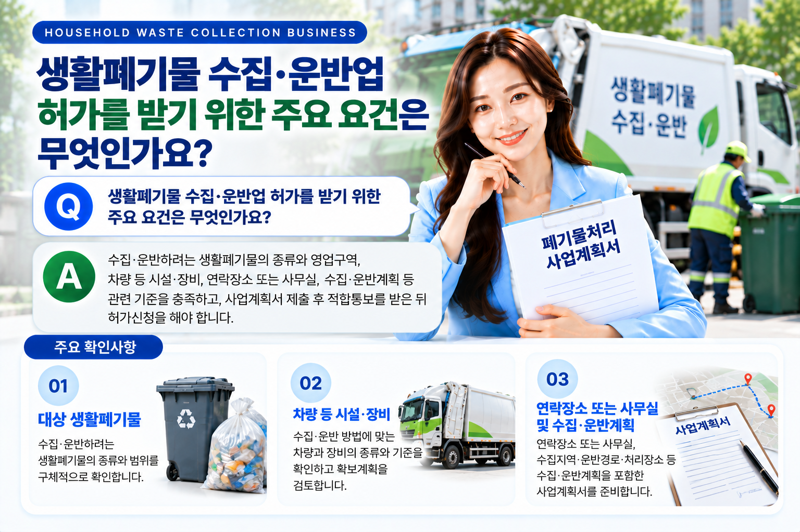

생활폐기물 수집·운반업은 단순히 차량을 마련하여 폐기물을 운반하는 사업이 아닙니다. 어떤 생활폐기물을 어느 지역에서 수집하고 어디로 운반할 것인지 사업계획을 구체화한 후, 적용되는 허가기준에 따라 절차를 진행해야 합니다. 따라서 차량 등 장비를 먼저 구입하기보다 대상 폐기물과 영업구역, 수집·운반계획 및 필요한 시설·장비 기준을 먼저 확인하는 것이 중요합니다.
01. 생활폐기물 수집·운반업이란?
생활폐기물을 수집하여 운반하는 영업을 하려는 경우에는 폐기물관리법에 따른 폐기물 수집·운반업 허가가 필요합니다.
허가를 준비할 때에는 먼저 실제로 수집·운반하려는 폐기물이 무엇인지 확인하고, 영업하려는 지역과 수집·운반방법을 구체적으로 정리해야 합니다.
대상 폐기물과 영업계획이 정리되어야 필요한 차량·장비와 사업계획서의 내용을 구체적으로 검토할 수 있습니다.
02. 대상 생활폐기물과 영업구역을 먼저 확인합니다
생활폐기물 수집·운반업을 준비할 때 가장 먼저 확인할 사항은 무엇을 어디에서 수집·운반할 것인지입니다.
생활폐기물 수집·운반업은 영업구역과 관련된 사항도 함께 검토해야 하므로 어느 지역을 대상으로 영업할 것인지 사업 초기단계에서 구체화하는 것이 좋습니다.
| 확인사항 | 주요 내용 |
|---|---|
| 대상 폐기물 | 수집·운반하려는 생활폐기물의 종류와 범위 |
| 수집지역 | 실제로 폐기물을 수집하려는 지역 |
| 영업구역 | 허가와 관련하여 적용되는 영업구역 확인 |
| 운반계획 | 수집한 폐기물을 어디로 어떻게 운반할 것인지 확인 |
03. 폐기물처리 사업계획서를 먼저 제출합니다
폐기물 수집·운반업 허가를 받으려는 경우에는 곧바로 허가신청부터 하는 것이 아니라 먼저 폐기물처리 사업계획서를 제출하여 사업계획의 적합 여부를 검토받는 절차를 거치게 됩니다.
사업계획서에는 사업의 기본내용뿐 아니라 수집·운반하려는 폐기물과 수집·운반계획, 필요한 시설·장비의 확보계획 등을 구체적으로 정리해야 합니다.
- 수집·운반 대상 폐기물
- 수집지역 및 영업계획
- 수집·운반방법
- 운반경로 및 처리장소
- 차량 등 시설·장비 확보계획
- 연락장소 또는 사무실 관련사항

04. 사업계획 적합통보를 받은 후 허가요건을 갖춥니다
제출한 사업계획서에 대한 검토를 거쳐 적합통보를 받으면 그 내용을 기준으로 실제 허가에 필요한 시설·장비 등의 요건을 준비하게 됩니다.
이 단계에서는 사업계획서에 작성한 내용과 실제 확보한 차량·장비 및 사업장의 내용이 서로 일치하도록 준비하는 것이 중요합니다.
따라서 사업계획 단계에서부터 실제 확보가 가능한 차량·장비와 영업방법을 기준으로 계획을 작성하는 것이 좋습니다.
05. 차량·장비와 연락장소 또는 사무실을 확인합니다
생활폐기물 수집·운반업에는 수집·운반방법에 맞는 차량 등 시설·장비에 관한 기준이 적용됩니다.
따라서 단순히 화물차량을 보유하고 있다는 이유만으로 허가요건을 갖추었다고 판단하기보다는 실제 수집·운반하려는 폐기물과 운반방법을 기준으로 필요한 차량·장비의 종류와 기준을 확인해야 합니다.
또한 생활폐기물 수집·운반업을 준비할 때에는 연락장소 또는 사무실에 관한 사항도 함께 확인해야 합니다.
- 수집·운반방법에 맞는 차량의 종류
- 필요한 차량·장비의 수량과 기준
- 차량·장비의 확보방법
- 연락장소 또는 사무실의 소재지
- 사업계획서와 실제 확보내용의 일치 여부
06. 요건을 갖춘 후 허가신청을 진행합니다
사업계획 적합통보를 받은 후 필요한 시설·장비 등의 요건을 갖추었다면 폐기물 수집·운반업 허가신청을 진행합니다.
허가신청 단계에서는 사업계획 적합통보 내용과 실제 준비상태가 일치하는지 확인하고, 허가신청서와 필요한 첨부자료를 함께 준비해야 합니다.
사업계획 적합통보를 받은 경우에는 법령에서 정한 기간 안에 허가를 신청해야 하므로 적합통보 이후의 준비일정도 함께 관리하는 것이 좋습니다.

07. 전체 허가절차는 어떻게 진행될까요?
생활폐기물 수집·운반업은 일반적으로 다음과 같은 순서로 준비하게 됩니다.
사업계획서를 작성하기 전에 대상 폐기물과 영업지역 및 수집·운반방법을 충분히 구체화해 두면 이후의 시설·장비 준비와 허가신청도 보다 일관성 있게 진행할 수 있습니다.
08. 신청 전 최종 확인사항
사업계획서를 제출하기 전에는 계획한 사업내용과 실제 준비 가능한 내용이 서로 일치하는지 다시 확인하는 것이 좋습니다.
- 수집·운반하려는 생활폐기물의 종류와 범위가 명확한지 확인합니다.
- 영업하려는 지역과 영업구역 관련사항을 확인합니다.
- 폐기물을 어디에서 수집하여 어디로 운반할 것인지 확인합니다.
- 수집·운반방법에 맞는 차량·장비 기준을 확인합니다.
- 차량·장비의 실제 확보방법을 검토합니다.
- 연락장소 또는 사무실 관련사항을 확인합니다.
- 사업계획서의 내용과 실제 사업계획이 일치하는지 확인합니다.
- 적합통보 이후 허가신청을 위한 준비일정을 확인합니다.
생활폐기물 수집·운반업을 준비하고 계신가요?
간단한 자가진단을 통해 대상 생활폐기물과 영업지역, 수집·운반계획, 차량·장비 및 연락장소 또는 사무실이 어느 정도 준비되어 있는지 먼저 확인해 보세요.
※ 생활폐기물 수집·운반업의 구체적인 허가요건과 영업구역, 시설·장비 기준 및 제출자료는 사업내용과 관할 행정기관의 검토사항 등에 따라 추가 확인이 필요할 수 있습니다. 실제 신청 전에는 사업계획과 적용되는 기준을 확인하여 준비하는 것이 좋습니다.